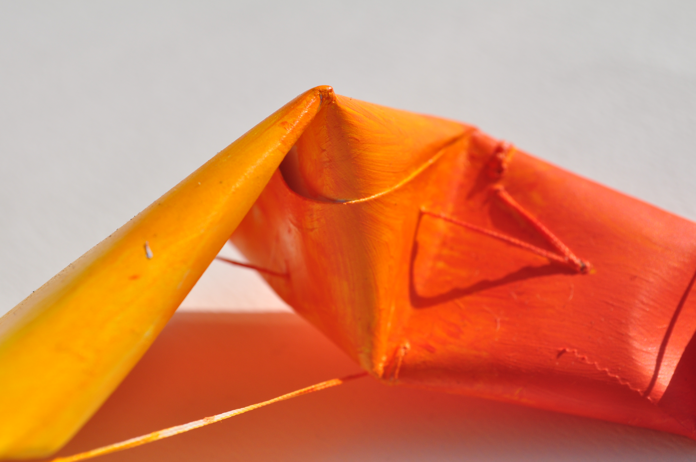
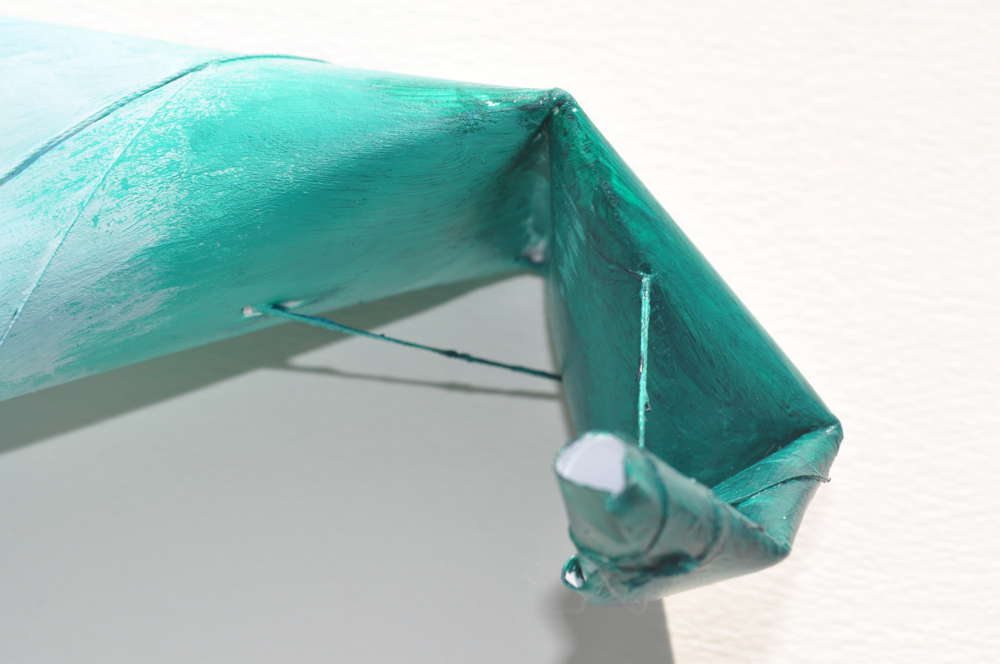
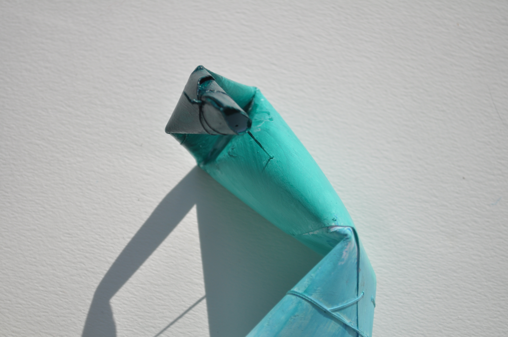
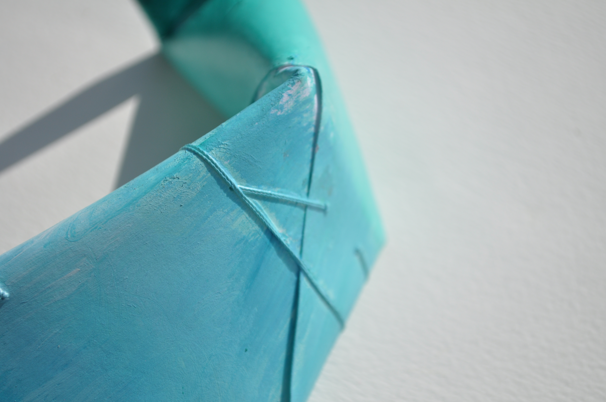
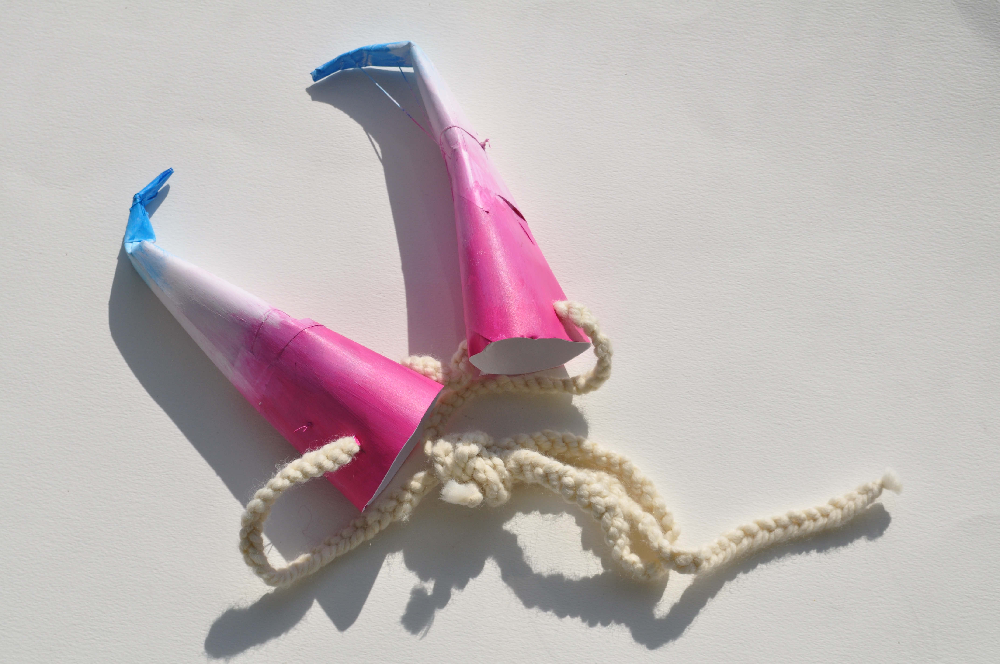
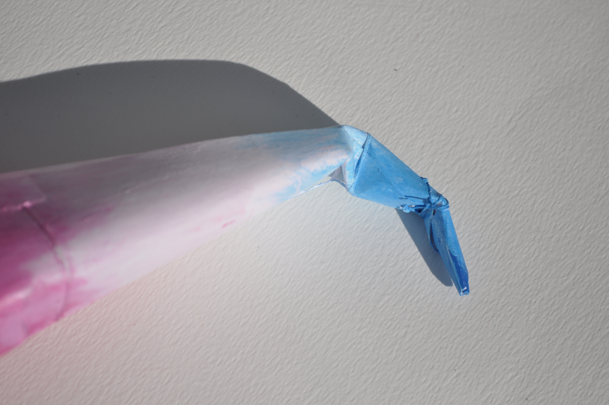
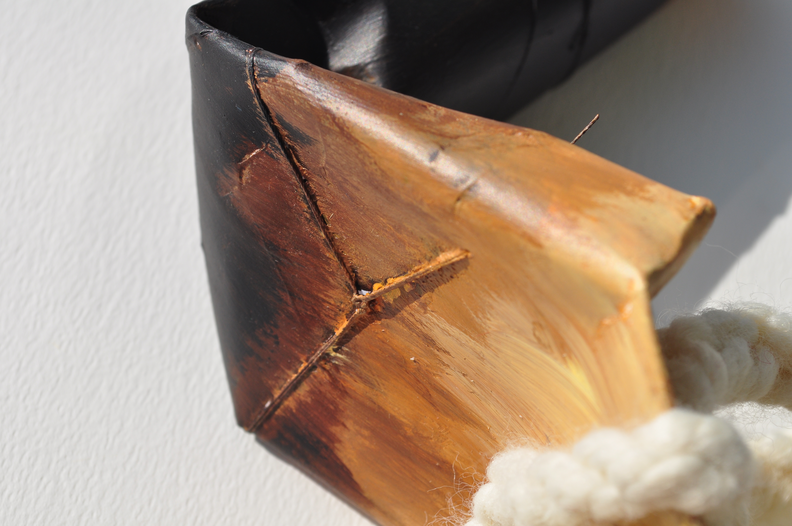
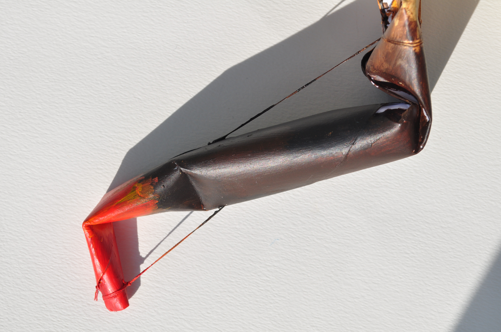

◂◂ index
Reading▾
Tactics
Notes
Lists
Material/Forms▾
paper-horns
dressing
creatures
what-the-work-can-do
thinking-through-practice
proposals
questions
1 / 5
2 / 5
3 / 5
4 / 5

5 / 5
❮
❯
1 / 5
2 / 5
3 / 5

4 / 5

5 / 5

❮
❯
1 / 3

2 / 3

3 / 3
❮
❯
1 / 5

2 / 5
3 / 5
4 / 5

5 / 5
❮
❯